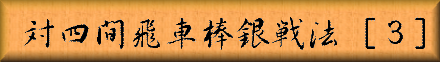

 |
|
||||
|
前章に引き続き対棒銀の四間飛車最善型からの攻防と、居飛車側が後手の最善型を
回避する策を御紹介します。 | |||||
| Figure 1
|
「図１」は前章「図５」と同一局面、後手の対棒銀最善型です。 「図１」から「図２」までの手順 ▲９八香 ▽６四歩 ▲４五歩 ▽３三桂 ▲３四歩 ▽４五桂 ▲４八銀 ▽３四飛 |
|||
| Figure 2
|
▲９八香は奇妙な手ですが次に▲４五歩 ▽同歩 ▲１一角成 ▽４四角 ▲２一馬 ▽９九角成 ▲９七香で桂得と言う進行が狙いで、こうなれば先手有利ですが▲４五歩に ▽３三桂と活用する手が好手となり、以下「図２」では後手の指せる形勢です。 「図１」の布陣は強靭な守備力を誇り、棋界から対四間飛車対策としての棒銀戦法が 採用率を激減させるに至るほどでした。そこで居飛車側も手順に改良を加え後手の理想形を 回避する工夫をする事になります。 |
|||
| Figure 3
。 |
図３」は▲５七銀左に▽４三銀と後手が上がった局面です。 「図３」から「図４」までの手順 ▲６八金上 ▽５四歩 ▲３七銀 ▽１四歩 ▲１六歩 ▽１二香 ▲４六歩 |
|||
| Figure 4
|
▲２六銀を保留して▽１四歩に▲１六歩と受け▽１二香にも先に▲４六歩と突いた「図４」が 先手側の工夫で、これで「図１」の最善型を防いでいます。何故なのかは次章で。 |
|||

|
||||